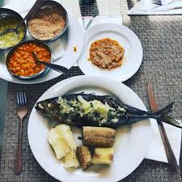

See
The heady cinema of Apichatpong Weerasethakul
"The film’s storyline revolves around two estranged brothers, one stable and the other anything but, after being split 35 years ago after their parents were murdered. Matias was six years old and Dias was still in his mother’s womb. Matias was fortunate and was adopted by a well-off family, who gave him a stable and loving upbringing. Dias was less fortunate, and was in and out of orphanages and trouble most of his life. Both brothers decided to serve their country, Matias (Raul Rosario) now a general in the military, and Dias (Paulo Americano) a commander of the DNIC, a special unit of the Angolan police force" - BFI
Netflix Angolan movie from the BFIListen
Sound of Siam
Buraka Som Sistema – Sound Of Kuduro 2009. "In 2005, he co-founded DJs Do Guetto – alongside DJ Pausas, DJ Fofuxo, Nervoso, and DJ Jesse – and the crew pushed a rebellious, fast-paced strain of the genre. He compares it to the early days of hip-hop in New York, with its wild, high-stakes competitions and DIY parties. “Kuduro is the beat of my heart and in making others a part of it, it beats harder,” Marfox says passionately. “Kids in my neighbourhood tell me every day that they feel their dreams are possible because of what I’ve been able to do." - Kuduro Records
Sound of Kuduro danceTaste
Tilapia fish recipe
Ingredients: Tilapia, salt Ingredients for sauce: Onions Pepper Olive oil Lemon Vinegar Salt Cooking Instructions: Season the fish with salt and oil. Grill in oven or over charcoal fire. Sauce Chop onion finely, add lemon juice, water, salt, pepper and oil here, or check out her recipe book for more inspiration.
 Mufete Tilapia